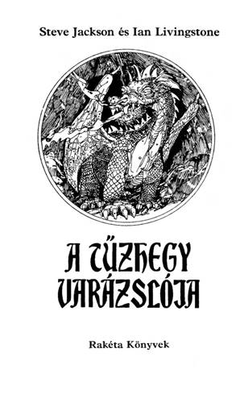
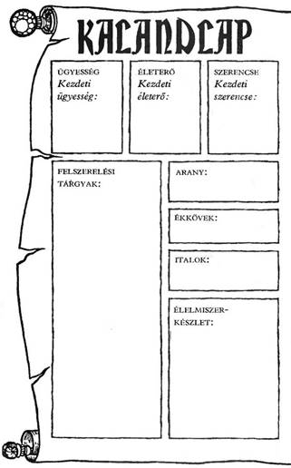
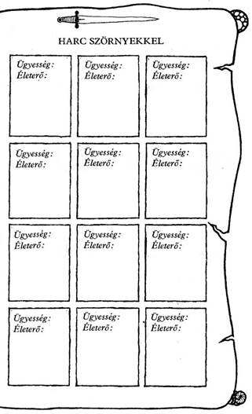
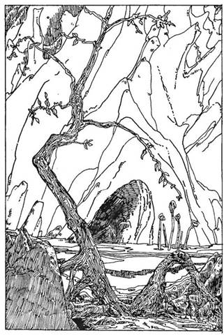

A mű eredeti címe:
The Warlock of Firetop Mountain
Fordította:
Fekete Miklós
Russ Nicholson illusztrációival
© Steve Jackson and Ian Livingstone, 1982
Hungarian translation Fekete Miklós, 1989
Ennek a könyvnek Te vagy a hőse. Te vívsz meg a kocka segítségével az óriásokkal és a szörnyekkel, magad döntesz, hogy merre haladj tovább, kivel barátkozz, csatázz. Nem pusztán az író fantáziája irányítja a történetet, hanem a te bátorságod, kíváncsiságod, leleményességed, kalandvágyad és józan eszed is.
Játék és regény egyszerre, amit a kezedben tartasz. Kalandos vállalkozás, amelybe belebukni is lehet, de ha jól döntesz, sikerrel jársz.
Így hát ezt a könyvet ne úgy olvasd, ahogy azt megszoktad. Mint látod, itt még az oldalak sincsenek megszámozva a bevezető után. A - hosszabb-rövidebb - bekezdések viselnek számokat egytől négyszázig. Ezek között előre-hátra lapozva haladsz előre a történetben a saját igényeid szerint. Ha kardot rántasz az ellenségre, máshová lapozol, mint amikor elbújnál előle.
Barbár harcosok, varázslók, szörnyetegek, törpék népesítik be ezt a fantasztikus világot. Mi kell ahhoz, hogy ne bukj el közöttük? Csak az, ami a mindennapi élethez is: ügyesség, jártasság, ötletesség; az, hogy felkészülten várd a nehézségeket.
És Szerencse, amely nélkül az előző három talán mit sem ér, de ha csak erre számítasz, biztosan cserbenhagy.
Hogy mit jelent az ÜGYESSÉG, ÉLETERŐ és SZERENCSE ebben a könyvben, megtudod a következőkből. Ha netán nem lenne teljesen világos a dolog, ne törődj vele; bátran előre! Vágj neki az olvasásnak, menet közben minden a helyére kerül! De ha elfelejtenéd, hogyan kell jól megvívni egy csatát, hogyan menekülhetsz, hogyan gyógyíthatod magad a játék szabályai szerint, nyugodtan visszalapozhatsz.
Hogyan küzdj meg
az alvilág teremtményeivel?
Mielőtt belevágnál ebbe a kalandba, fel kell mérned, mennyire vagy erős, illetve gyenge. Van egy kardod, egy pajzsod, és egy hátizsákod étellel, itallal az útra, meg. Felkészültél a feladatra, megtanultál a karddal bánni, és keményen edzettél, hogy erős légy.
Hogy megtudd, milyen hatékonyak voltak előkészületeid, dobókockával döntsd el kezdő ÜGYESSÉG és ÉLETERŐ pontjaidat. A 16. oldalon találod a Kalandlapot, amelyre feljegyezheted kalandod részleteit. Ugyanitt jelölheted ÜGYESSÉG és ÉLETERŐ pontjaidat is.
Jól teszed, ha ceruzával írod a pontokat a Kalandlapra vagy fénymásolatot készíttetsz erről az oldalról, hogy azt újabb játékra is felhasználhasd.
ÜGYESSÉG, ÉLETERŐ ÉS SZERENCSE
Dobj egy kockával. Adj 6-ot a dobott számhoz, és az összeget írd be a Kalandlap ÜGYESSÉG négyzetébe.
Dobj két kockával, és az eredményhez adjál 12-t, a kapott számot írd be az ÉLETERŐ négyzetbe.
Van egy SZERENCSE rovat is. Ehhez egy kockával dobj, és 6-ot adj az eredményhez, majd az összeget írd be a SZERENCSE négyzetbe.
Különböző okok miatt, melyeket majd részletesen elmagyarázunk, ÜGYESSÉG, ÉLETERŐ és SZERENCSE pontjaid a kalandok során folyamatosan változnak. Pontosan kell vezetned őket, ezért azt tanácsoljuk, hogy kis betűkkel írj a négyzetekbe vagy tarts kéznél radírt. De soha ne töröld ki a kezdeti pontjaidat, mert bár további ÜGYESSÉG, ÉLETERŐ és SZERENCSE pontokat szerezhetsz, összegük soha nem haladhatja meg a kezdeti értéket, kivéve néhány nagyon ritka alkalmat, amikor a megfelelő oldalon ezt az utasítást kapod.
ÜGYESSÉG pontjaid kardvívó tudásodat és általános harci tapasztalatodat mutatják. Nem árt minél több ilyen pontra szert tenni. Az ÉLETERŐ pontok jelzik kondíciódat, az akaraterődet, hogy túlélj egy-egy helyzetet, továbbá eltökéltségedet, állóképességedet; minél magasabb az ÉLETERŐ pontszám, annál hosszabb ideig maradhatsz életben. A SZERENCSE pontok mutatják, mennyire vagy szerencsés ember.
A szerencse és a varázslat az úr abban a fantasztikus birodalomban, amelybe most behatolsz.
A CSATA
Sűrűn találsz majd olyan oldalakat, ahol azt az utasítást kapod, hogy küzdj meg valamilyen teremtménnyel. Lehet, hogy lesz választási lehetőséged; de ha nem, vagy ha úgy döntesz, hogy vállalod a harcot, azt a következő módon kell megvívnod:
Először is jegyezd fel a teremtmény ÜGYESSÉGÉT és ÉLETEREJÉT a Kalandlapod első üres, „Harc Szörnyekkel” feliratot viselő rovatába. A teremtmények pontszámait minden alkalommal megadja a könyv, amikor összecsapsz valamelyikükkel.
A harc menete
MENEKÜLÉS
Bizonyos oldalakon eldöntheted, hogy megfutamodsz-e a csatából, ha a dolgok rosszul alakulnak. Ám ha megfutamodsz, menekülés közben a teremtmény automatikusan sebet ejt rajtad (ezért 2 ÉLETERŐ pontot kell levonnod.) Ez a gyávaság ára. Ám ilyenkor is hasznát veheted a SZERENCSÉNEK (lásd odébb). De csak akkor menekülhetsz, ha az adott oldalon erre külön megkapod a lehetőséget.
CSATA EGYNÉL TÖBB
TEREMTMÉNNYEL
Ha egynél több lénnyel kerülnél egyszerre összeütközésbe, mindig közöljük veled a harcra vonatkozó utasítást az adott pont alatt. Néha egyszerre kell velük megküzdened, néha meg mindegyikkel külön-külön.
SZERENCSE
Kalandjaid során, akár csatában, akár olyan helyzetekben, amikor a SZERENCSE dönthet sorsod alakulásában (az erre vonatkozó utasítást az adott fejezetpontok alatt megkapod), a SZERENCSÉDRE is számíthatsz, hogy az események kimenetele számodra kedvező legyen. De vigyázz! A SZERENCSÉRE számítani kockázatos, és ha balszerencsés vagy, az eredmény végzetes lehet.
SZERENCSÉDET a következő módon teheted próbára. Dobj két kockával. Ha a kapott szám nem nagyobb, mint a jelenlegi SZERENCSE pontszámod, az eredmény kedvező. Ha magasabb számot dobsz, mint a jelenlegi SZERENCSE pontszámod, balszerencséd volt, és vállald a következményeit.
Úgy hívjuk ezt, hogy „Tedd próbára SZERENCSÉD!”. Minden alkalommal, amikor próbára teszed SZERENCSÉDET, 1 pontot le kell vonnod SZERENCSE pontszámodból. Így hamar rájössz, hogy a SZERENCSÉRE hagyatkozni kockázatos vállalkozás.
A SZERENCSE használata csatában
A könyv bizonyos oldalain felszólítunk, hogy Tedd próbára SZERENCSÉDET!, és közöljük, hogy SZERENCSÉD volt vagy sem. A csatákban azonban mindig te döntesz, hogy a SZERENCSÉD segítségével megpróbálsz-e komolyabb sebet ejteni azon a teremtményen, amelyet éppen megsebeztél, vagy csökkenteni annak a sebnek a hatását, amelyet a teremtménytől elszenvedtél.
Ha te sebezted meg a teremtményt, a fent leírt módon Tedd próbára a SZERENCSÉDET! Ha szerencsés vagy, komoly sebet ejtettél rajta, 2 külön pontot levonhatsz a teremtmény ÉLETEREJÉBŐL. Azonban, ha balszerencsés vagy, a seb puszta karcolás, és 1 pontot vissza kell adnod ellenfeled ÉLETERŐ pontjaihoz.
(Tehát: a szabályos 2 pont levonás helyett most csak 1 pontot vonhatsz le tőle.)
Ha a teremtmény sebzett meg téged, azért Tedd próbára a SZERENCSÉDET, hogy csökkentsd a sebet. Ha SZERENCSÉD van, sikerült elkerülnöd a teljes csapást. 1 pontot visszaadsz magadnak (2 pontos kár helyett csak 1 pontos kár keletkezett ÉLETERŐDBEN). Ha nem voltál szerencsés, komolyabb találat ért, plusz 1 ÉLETERŐ pontot vonj le magadtól.
Ne feledd, hogy minden alkalommal le kell vonnod 1 pontot adott SZERENCSE pontszámodból, ahányszor próbára teszed a SZERENCSÉDET!
AZ ÜGYESSÉG, ÉLETERŐ
ÉS SZERENCSE KEZDETI ÉRTÉKRE
TÖRTÉNŐ VISSZAÁLLÍTÁSA
ÜGYESSÉG
ÜGYESSÉG pontjaid nem sokat fognak változni kalandjaid során. Helyenként, egy-egy oldalon olyan utasítást találsz, hogy növeld vagy csökkentsd ÜGYESSÉG pontjaid számát. Egy csodafegyver növelheti ÜGYESSÉGEDET, de ne feledd, hogy egyszerre csak egy fegyvert használhatsz. Nem tarthatsz igényt 2 ÜGYESSÉG jutalompontra, mert két varázskardod van. ÜGYESSÉG pontjaid száma soha nem lépheti túl az eredeti értékét, hacsak külön utasítást nem kapsz rá. Ha iszol az ÜGYESSÉG Italából (lásd később), bármikor a kezdeti értékére áll vissza ÜGYESSÉGED.
ÉLETERŐ ÉS ÉLELMISZER
ÉLETERŐ pontjaid sokszor fognak változni kalandjaid során, amint megküzdesz a szörnyekkel és lelkesítő feladatokat vállalsz. Ahogy célodhoz közeledsz, ÉLETERŐ pontjaidnak száma veszélyesen csökkenhet, és a csaták különösen kockázatossá válnak, ezért légy óvatos!
Hátizsákodban tíz étkezésre elegendő élelmiszer van. Bármikor megállhatsz pihenni és enni, kivéve, ahol erre más utasítást kapsz, és csak egy élelmiszeradagot fogyaszthatsz el. Minden étkezés 4 pontot ad ÉLETERŐ pontjaidhoz, és 1 ponttal csökkenti Élelmiszer-tartalékodat. A Kalandlapon külön Élelmiszerkészlet rovat van, hogy feljegyezd, mennyit fogyasztottál. Ne feledd, hogy hosszú utat kell megtenned, ezért bölcsen használd fel Élelmiszerkészletedet!
Azt se feledd, hogy ÉLETERŐ pontjaid száma sohasem lépheti túl a kezdeti értéket, kivéve, ha egy adott oldalon ezt az utasítást kaptad. Az Erőital megivásával (lásd később) bármikor eredeti szintjére állíthatod ÉLETERŐDET.
SZERENCSE
SZERENCSE pontjaidhoz továbbiakat szerezhetsz kalandjaid során, ha kivételesen SZERENCSÉS vagy. Ennek részleteit megtalálod a könyvben. Ne feledd, hogy az ÜGYESSÉGHEZ és az ÉLETERŐHÖZ hasonlóan SZERENCSE pontjaid sem léphetik túl kezdeti értéküket, kivéve, ha egy-egy oldalon ezt az utasítást kapod. A SZERENCSE Italát felhörpintve (lásd később) bármikor kezdeti értékére állíthatod vissza SZERENCSÉDET és 1 ponttal növelheted kezdeti SZERENCSÉDET.
FELSZERELÉS ÉS ITALOK
Minimális felszereléssel kezded kalandodat, de utad során találhatsz vagy vásárolhatsz holmikat. Karddal vagy felfegyverezve, és bőrpáncélt viselsz. Hátizsákodban étel, ital és azok a kincsek vannak, amelyeket megszerzel. Egy lámpásod is van, amely megvilágítja utadat.
Emellett magaddal vihetsz egy palackkal a Varázsitalból; ez segít rajtad kutatásod során. A következő palackok bármelyikét választhatod:
Az ÜGYESSÉG ITALA - kezdeti értékére állítja vissza ÜGYESSÉG pontjaidat.
Az ERŐ ITALA - kezdeti értékére állítja vissza ÉLETERŐ pontjaidat.
A SZERENCSE ITALA - kezdeti értékére állítja vissza SZERENCSE pontjaidat, és 1 ponttal növeli kezdeti SZERENCSÉDET.
Kalandjaid során bármikor kortyolhatsz a magaddal vitt italból (kivéve, amikor harcban állsz). Ezeknek az italoknak egy adagja visszaállítja ÜGYESSÉGED, ÉLETERŐD vagy SZERENCSÉD kezdeti értékét (és a SZERENCSE ITALA 1 ponttal növeli kezdeti SZERENCSÉDET).
Minden palack kétadagnyi varázsitalt tartalmaz, tehát kétszer élhetsz vele kalandjaid során. Jegyezd fel a Kalandlapon, ha elhasználtad.
Azt se feledd, hogy a háromféle ital közül csak az egyiket viheted magaddal az útra, válassz tehát bölcsen!
TANÁCSOK A JÁTÉKHOZ
Egyetlen helyes út vezet el a Varázsló útvesztőjén keresztül, és csak többszöri próbálkozásra találod azt meg. Jegyzetelj és készíts térképet utad során, ez felbecsülhetetlen értékű lesz az elkövetkező kalandjaidban, és segít, hogy gyorsan keresztüljuss a felderítetlen részeken.
Nem minden szoba rejt kincseket. Sokszor csupán csapdák vagy olyan lények várnak rád, melyekkel összeütközésbe kerülsz. Sok hamis nyom van, és még ha sikerrel jutsz is át a Labirintuson, csak akkor kaparinthatod meg a Varázsló kincsét, ha útközben bizonyos tárgyakra szert teszel.
Sokféle kulcsot találsz majd a Labirintus szobáiban, de csak akkor tudod a Varázsló ládáját kinyitni, és megszerezni kincsét, ha rendelkezel a megfelelő kulcsokkal…
Nem egyszer csalódás fog érni a hegy belsejében.
Az egyetlen igazi út minimális kockázatot jelent, és minden játékos, függetlenül attól, milyen pontokkal vág neki, elég könnyen végigmehet rajta.
Kísérjen szerencse kalandjaid során! Sok sikert!


Háttér
Csak egy vakmerő kalandor vágna bele egy ilyen veszélyes vállalkozásba - mint ez a kincskeresés - anélkül, hogy előtte ne próbálna meg minden lehetségeset megtudni a hegyről és a kincsről. Mielőtt elmennél a Tűzhegy birodalmába, néhány napot egy környékbeli falu lakosai között töltesz vagy kétnapnyi járásra a hegytől. Mivel rokonszenves vagy nekik, könnyen kapcsolatba kerülsz a helyi parasztokkal. Bár sokféle történetet mesélnek el neked a titokzatos Varázslóról és rejtekhelyéről, egyáltalán nem vagy benne biztos, hogy a történetek mindegyike, vagy akár csak egy is, valóban igaz-e. A falusiak sok kalandvágyó embert láttak már a hegyhez vezető úton, de közülük csak nagyon kevesen tértek vissza. Most már biztosan tudod, hogy az előtted álló Út különösen veszedelmes lesz. Azok közül, akik vissza- jutottak a faluba, még senki sem kísérelte meg, hogy visszamerészkedjen a hegyhez.
Úgy érzed, elképzelhető, hogy valóban létezik a Varázsló, és hogy a kincseit egy pompás ládában rejtegeti, és melynek kulcsait különféle lények őrzik az útvesztőben. A Varázsló hatalmas mágikus erővel rendelkezik. Egyesek szerint fiatal, mások szerint Öreg. Néhányan úgy vélik, erejét egy csomag bűvös kártyából meríti, mások azt vallják, hatalmát a kezén viselt fekete selyemkesztyű adja.
A hegy gyomrába vezető bejáratot egy csapat bibircsókos arcú Goblin őrzi. Ezeket a buta teremtményeket nem érdekli más, csak az eszem-iszom. Továbbjutva, a belső kamrákban már jóval félelmetesebb lények vannak. Ahhoz, hogy a belső termekbe el lehessen jutni, át kell kelni egy folyón. A kompszolgálat rendszeres, de a révész ingyen nem visz át, úgyhogy néhány aranyat félre kell tenned, ha át akarsz kelni a folyón. A helyiek azt is tanácsolják, hogy vezess térképet kóborlásaidról, mert enélkül reménytelenül el fogsz tévedni a hegy belsejében.
Mikor az indulás napja elérkezik, az egész falu apraja-nagyja megjelenik, hogy szerencsés utat kívánjon neked. Nem egy nőnek - fiatalnak, öregnek egyaránt - könny csillog a szemében. Nem tudsz szabadulni a gondolattól, hogy ezek a részvét könnyei, s olyan szemekben csillognak, melyeket tán sohasem látsz viszont...
És most lapozz az 1-re!
